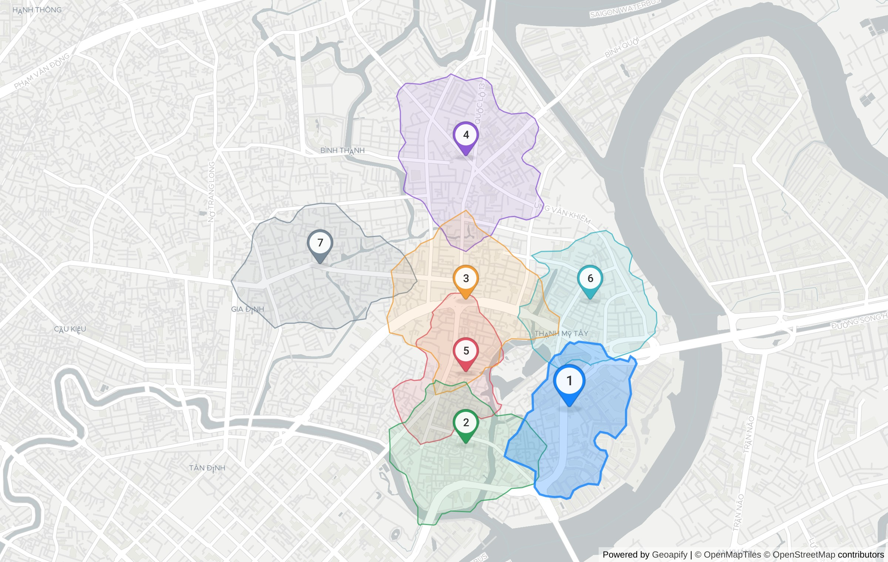

pharmacy in Phường Thạnh Mỹ Tây
Where should I open a pharmacy in Bình Thạnh?

| # | Candidate | Score | Demand | Competitors | Drive (min) | Evidence |
|---|---|---|---|---|---|---|
| 1 | 113 Nguyễn Hữu Cảnh 10-min walk reaches 0.64 km² with 5 commercial.supermarket, 1 healthcare.clinic_or_praxis and 1 competing healthcare.pharmacy; 23 min average drive from 3 origin(s). | 0.58 | 6 | 1 | 23 | T14 T15 T16 T17 T18 T19 T55 T56 T57 |
| 2 | Trường Trung học cơ sở Phú Mỹ, Ngô Tất Tố 10-min walk reaches 0.73 km² with 4 commercial.supermarket, 1 healthcare.clinic_or_praxis and 1 competing healthcare.pharmacy; 22 min average drive from 3 origin(s). | 0.57 | 5 | 1 | 21.7 | T8 T9 T10 T11 T12 T13 T55 |
| 3 | Cầu vượt Hàng Xanh 10-min walk reaches 0.93 km² with no demand POIs and 0 competing healthcare.pharmacy; 24 min average drive from 3 origin(s). | 0.55 | 0 | 0 | 24 | T20 T21 T22 T23 T24 T25 T55 |
| 4 | Cửa Hàng Tuấn Thành Motor, Xô Viết Nghệ Tĩnh 10-min walk reaches 0.93 km² with 1 commercial.supermarket and 0 competing healthcare.pharmacy; 26 min average drive from 3 origin(s). | 0.52 | 1 | 0 | 25.7 | T38 T39 T40 T41 T42 T43 T55 |
| 5 | 43, Hẻm 158 Xô Viết Nghệ Tĩnh 10-min walk reaches 0.52 km² with no demand POIs and 0 competing healthcare.pharmacy; 21 min average drive from 3 origin(s). | 0.50 | 0 | 0 | 21.3 | T26 T27 T28 T29 T30 T31 T55 |
| 6 | Hẻm 72 Nguyễn Văn Thương 10-min walk reaches 0.67 km² with 1 commercial.supermarket and 0 competing healthcare.pharmacy; 28 min average drive from 3 origin(s). | 0.36 | 1 | 0 | 27.8 | T44 T45 T46 T47 T48 T49 T55 |
| 7 | 443c, Bạch Đằng 10-min walk reaches 0.80 km² with 2 commercial.supermarket and 1 competing healthcare.pharmacy; 24 min average drive from 3 origin(s). | 0.33 | 2 | 1 | 24.3 | T32 T33 T34 T35 T36 T37 T55 |
Limitations
- Geoapify Boundaries returned no ward-level unit for this point (levels: Khu phố 21 ⊂ Thành phố Hồ Chí Minh ⊂ Việt Nam); ward name taken from the geocoder ("Phường Thạnh Mỹ Tây") and candidates generated in a disk.
- POI counts come from Geoapify Places (OpenStreetMap-based); coverage of small Vietnamese shops is incomplete, so counts are relative signals, not market sizes.
- Drive times use Geoapify's approximated traffic at query time, not a specific hour.
- Weights (1.0.0-isoline) are heuristic and not calibrated against real store outcomes.
- Decision support only — visit the site before signing a lease.
Evidence trace
| T | API | Request | Status | ms | Result |
|---|---|---|---|---|---|
| T0 | autocomplete | GET /v1/geocode/autocomplete?text=Ng%C3%A3+t%C6%B0+H%C3%A0ng+Xanh%2C+B%C3%ACnh+Th%E1%BA%A1nh&lang=vi&limit=5&filter=countrycode%3Avn&bias=proxim | 200 | 3224 | {"count":5,"top":"Ngã tư Hàng Xanh, Cầu vượt Hàng Xanh, Phường Thạnh Mỹ Tây, Thành phố Thủ Đức, |
| T1 | geocoding | GET /v1/geocode/search?text=Ng%C3%A3+t%C6%B0+H%C3%A0ng+Xanh%2C+B%C3%ACnh+Th%E1%BA%A1nh%2C+H%E1%BB%93+Ch%C3%AD+Minh&lang=vi&limit=5&filter=countrycod | 200 | 1368 | {"count":0} |
| T2 | autocomplete | GET /v1/geocode/autocomplete?text=Ng%C3%A3+t%C6%B0+H%C3%A0ng+Xanh&lang=vi&limit=5&filter=countrycode%3Avn&bias=proximity%3A106.7009%2C10.7769&am | 200 | 604 | {"count":3,"top":"Ngã tư Hàng Xanh, Phường Thạnh Mỹ Tây, Thành phố Thủ Đức, 72308, Việt Nam&quo |
| T3 | boundaries | GET /v1/boundaries/part-of?lat=10.801436&lon=106.7113199&lang=vi&geometry=geometry_1000 | 200 | 1355 | {"levels":"Khu phố 21 ⊂ Thành phố Hồ Chí Minh ⊂ Việt Nam"} |
| T4 | places | GET /v2/places?categories=healthcare.pharmacy&filter=rect%3A106.699431%2C10.813114%2C106.723209%2C10.789758&limit=200&lang=vi | 200 | 426 | {"count":4,"categories":"healthcare.pharmacy"} |
| T5 | places | GET /v2/places?categories=healthcare.hospital&filter=rect%3A106.699431%2C10.813114%2C106.723209%2C10.789758&limit=200&lang=vi | 200 | 305 | {"count":0,"categories":"healthcare.hospital"} |
| T6 | places | GET /v2/places?categories=healthcare.clinic_or_praxis&filter=rect%3A106.699431%2C10.813114%2C106.723209%2C10.789758&limit=200&lang=vi | 200 | 331 | {"count":2,"categories":"healthcare.clinic_or_praxis"} |
| T7 | places | GET /v2/places?categories=commercial.supermarket&filter=rect%3A106.699431%2C10.813114%2C106.723209%2C10.789758&limit=200&lang=vi | 200 | 483 | {"count":11,"categories":"commercial.supermarket"} |
| T8 | reverse-geocoding | GET /v1/geocode/reverse?lat=10.792094&lon=106.711791&lang=vi&format=json | 200 | 684 | {"top":"Trường Trung học cơ sở Phú Mỹ, 120B, Ngô Tất Tố, Phường Thạnh Mỹ Tây, Thành phố Thủ Đức, HC 72308 |
| T9 | isoline | GET /v1/isoline?lat=10.792094&lon=106.711791&type=time&mode=walk&range=600 | 200 | 321 | {"mode":"walk","range":600,"type":"time","id":"0a69743b |
| T10 | places | GET /v2/places?categories=healthcare.pharmacy&filter=geometry%3A0a69743bc2f4d802701fb2f553c41706&limit=150&lang=vi | 200 | 310 | {"count":1,"categories":"healthcare.pharmacy"} |
| T11 | places | GET /v2/places?categories=healthcare.hospital&filter=geometry%3A0a69743bc2f4d802701fb2f553c41706&limit=150&lang=vi | 200 | 370 | {"count":0,"categories":"healthcare.hospital"} |
| T12 | places | GET /v2/places?categories=healthcare.clinic_or_praxis&filter=geometry%3A0a69743bc2f4d802701fb2f553c41706&limit=150&lang=vi | 200 | 408 | {"count":1,"categories":"healthcare.clinic_or_praxis"} |
| T13 | places | GET /v2/places?categories=commercial.supermarket&filter=geometry%3A0a69743bc2f4d802701fb2f553c41706&limit=150&lang=vi | 200 | 572 | {"count":4,"categories":"commercial.supermarket"} |
| T14 | reverse-geocoding | GET /v1/geocode/reverse?lat=10.794431&lon=106.718657&lang=vi&format=json | 200 | 766 | {"top":"113 Nguyễn Hữu Cảnh, Nguyễn Hữu Cảnh, Phường Thạnh Mỹ Tây, Thành phố Thủ Đức, HC 71108, Việt Nam& |
| T15 | isoline | GET /v1/isoline?lat=10.794431&lon=106.718657&type=time&mode=walk&range=600 | 200 | 477 | {"mode":"walk","range":600,"type":"time","id":"8de65ed5 |
| T16 | places | GET /v2/places?categories=healthcare.pharmacy&filter=geometry%3A8de65ed5b918308cbd53a006ad49ca95&limit=150&lang=vi | 200 | 469 | {"count":1,"categories":"healthcare.pharmacy"} |
| T17 | places | GET /v2/places?categories=healthcare.hospital&filter=geometry%3A8de65ed5b918308cbd53a006ad49ca95&limit=150&lang=vi | 200 | 372 | {"count":0,"categories":"healthcare.hospital"} |
| T18 | places | GET /v2/places?categories=healthcare.clinic_or_praxis&filter=geometry%3A8de65ed5b918308cbd53a006ad49ca95&limit=150&lang=vi | 200 | 473 | {"count":1,"categories":"healthcare.clinic_or_praxis"} |
| T19 | places | GET /v2/places?categories=commercial.supermarket&filter=geometry%3A8de65ed5b918308cbd53a006ad49ca95&limit=150&lang=vi | 200 | 499 | {"count":5,"categories":"commercial.supermarket"} |
| T20 | reverse-geocoding | GET /v1/geocode/reverse?lat=10.80144&lon=106.711791&lang=vi&format=json | 200 | 544 | {"top":"Cầu vượt Hàng Xanh, Phường Thạnh Mỹ Tây, Thành phố Thủ Đức, 72308, Việt Nam","type" |
| T21 | isoline | GET /v1/isoline?lat=10.80144&lon=106.711791&type=time&mode=walk&range=600 | 200 | 655 | {"mode":"walk","range":600,"type":"time","id":"1ffbff70 |
| T22 | places | GET /v2/places?categories=healthcare.pharmacy&filter=geometry%3A1ffbff7056cb020fe65102297e89278e&limit=150&lang=vi | 200 | 371 | {"count":0,"categories":"healthcare.pharmacy"} |
| T23 | places | GET /v2/places?categories=healthcare.hospital&filter=geometry%3A1ffbff7056cb020fe65102297e89278e&limit=150&lang=vi | 200 | 267 | {"count":0,"categories":"healthcare.hospital"} |
| T24 | places | GET /v2/places?categories=healthcare.clinic_or_praxis&filter=geometry%3A1ffbff7056cb020fe65102297e89278e&limit=150&lang=vi | 200 | 271 | {"count":0,"categories":"healthcare.clinic_or_praxis"} |
| T25 | places | GET /v2/places?categories=commercial.supermarket&filter=geometry%3A1ffbff7056cb020fe65102297e89278e&limit=150&lang=vi | 200 | 373 | {"count":0,"categories":"commercial.supermarket"} |
| T26 | reverse-geocoding | GET /v1/geocode/reverse?lat=10.796767&lon=106.711791&lang=vi&format=json | 200 | 729 | {"top":"43, Hẻm 158 Xô Viết Nghệ Tĩnh, Phường Thạnh Mỹ Tây, Thành phố Hồ Chí Minh, 72308, Việt Nam", |
| T27 | isoline | GET /v1/isoline?lat=10.796767&lon=106.711791&type=time&mode=walk&range=600 | 200 | 331 | {"mode":"walk","range":600,"type":"time","id":"d5c68fd3 |
| T28 | places | GET /v2/places?categories=healthcare.pharmacy&filter=geometry%3Ad5c68fd3314fbda59d3161b913546690&limit=150&lang=vi | 200 | 423 | {"count":0,"categories":"healthcare.pharmacy"} |
| T29 | places | GET /v2/places?categories=healthcare.hospital&filter=geometry%3Ad5c68fd3314fbda59d3161b913546690&limit=150&lang=vi | 200 | 348 | {"count":0,"categories":"healthcare.hospital"} |
| T30 | places | GET /v2/places?categories=healthcare.clinic_or_praxis&filter=geometry%3Ad5c68fd3314fbda59d3161b913546690&limit=150&lang=vi | 200 | 386 | {"count":0,"categories":"healthcare.clinic_or_praxis"} |
| T31 | places | GET /v2/places?categories=commercial.supermarket&filter=geometry%3Ad5c68fd3314fbda59d3161b913546690&limit=150&lang=vi | 200 | 320 | {"count":0,"categories":"commercial.supermarket"} |
| T32 | reverse-geocoding | GET /v1/geocode/reverse?lat=10.803777&lon=106.702178&lang=vi&format=json | 200 | 802 | {"top":"443c, Bạch Đằng, Phường Gia Định, Thành phố Thủ Đức, HC 72317, Việt Nam","type":&q |
| T33 | isoline | GET /v1/isoline?lat=10.803777&lon=106.702178&type=time&mode=walk&range=600 | 200 | 440 | {"mode":"walk","range":600,"type":"time","id":"3ebac0ee |
| T34 | places | GET /v2/places?categories=healthcare.pharmacy&filter=geometry%3A3ebac0ee363b176b4804ac77ddff3415&limit=150&lang=vi | 200 | 366 | {"count":1,"categories":"healthcare.pharmacy"} |
| T35 | places | GET /v2/places?categories=healthcare.hospital&filter=geometry%3A3ebac0ee363b176b4804ac77ddff3415&limit=150&lang=vi | 200 | 310 | {"count":0,"categories":"healthcare.hospital"} |
| T36 | places | GET /v2/places?categories=healthcare.clinic_or_praxis&filter=geometry%3A3ebac0ee363b176b4804ac77ddff3415&limit=150&lang=vi | 200 | 311 | {"count":0,"categories":"healthcare.clinic_or_praxis"} |
| T37 | places | GET /v2/places?categories=commercial.supermarket&filter=geometry%3A3ebac0ee363b176b4804ac77ddff3415&limit=150&lang=vi | 200 | 354 | {"count":2,"categories":"commercial.supermarket"} |
| T38 | reverse-geocoding | GET /v1/geocode/reverse?lat=10.810786&lon=106.711791&lang=vi&format=json | 200 | 792 | {"top":"Cửa Hàng Tuấn Thành Motor, 555, Xô Viết Nghệ Tĩnh, Phường Bình Thạnh, Thành phố Thủ Đức, HC 72308 |
| T39 | isoline | GET /v1/isoline?lat=10.810786&lon=106.711791&type=time&mode=walk&range=600 | 200 | 445 | {"mode":"walk","range":600,"type":"time","id":"3f478556 |
| T40 | places | GET /v2/places?categories=healthcare.pharmacy&filter=geometry%3A3f478556c9c4cb2dd6c9443ff4d81610&limit=150&lang=vi | 200 | 386 | {"count":0,"categories":"healthcare.pharmacy"} |
| T41 | places | GET /v2/places?categories=healthcare.hospital&filter=geometry%3A3f478556c9c4cb2dd6c9443ff4d81610&limit=150&lang=vi | 200 | 326 | {"count":0,"categories":"healthcare.hospital"} |
| T42 | places | GET /v2/places?categories=healthcare.clinic_or_praxis&filter=geometry%3A3f478556c9c4cb2dd6c9443ff4d81610&limit=150&lang=vi | 200 | 446 | {"count":0,"categories":"healthcare.clinic_or_praxis"} |
| T43 | places | GET /v2/places?categories=commercial.supermarket&filter=geometry%3A3f478556c9c4cb2dd6c9443ff4d81610&limit=150&lang=vi | 200 | 386 | {"count":1,"categories":"commercial.supermarket"} |
| T44 | reverse-geocoding | GET /v1/geocode/reverse?lat=10.80144&lon=106.72003&lang=vi&format=json | 200 | 629 | {"top":"Hẻm 72 Nguyễn Văn Thương, Phường Thạnh Mỹ Tây, Thành phố Thủ Đức, 72308, Việt Nam","typ |
| T45 | isoline | GET /v1/isoline?lat=10.80144&lon=106.72003&type=time&mode=walk&range=600 | 200 | 449 | {"mode":"walk","range":600,"type":"time","id":"1ecab02f |
| T46 | places | GET /v2/places?categories=healthcare.pharmacy&filter=geometry%3A1ecab02f66dc5f4bd9874e25227b379f&limit=150&lang=vi | 200 | 359 | {"count":0,"categories":"healthcare.pharmacy"} |
| T47 | places | GET /v2/places?categories=healthcare.hospital&filter=geometry%3A1ecab02f66dc5f4bd9874e25227b379f&limit=150&lang=vi | 200 | 289 | {"count":0,"categories":"healthcare.hospital"} |
| T48 | places | GET /v2/places?categories=healthcare.clinic_or_praxis&filter=geometry%3A1ecab02f66dc5f4bd9874e25227b379f&limit=150&lang=vi | 200 | 554 | {"count":0,"categories":"healthcare.clinic_or_praxis"} |
| T49 | places | GET /v2/places?categories=commercial.supermarket&filter=geometry%3A1ecab02f66dc5f4bd9874e25227b379f&limit=150&lang=vi | 200 | 396 | {"count":1,"categories":"commercial.supermarket"} |
| T50 | autocomplete | GET /v1/geocode/autocomplete?text=Ch%E1%BB%A3+B%E1%BA%BFn+Th%C3%A0nh%2C+Qu%E1%BA%ADn+1&lang=vi&limit=5&filter=countrycode%3Avn&bias=proximity%3A | 200 | 2796 | {"count":5,"top":"bưu điện quận 1, 65, Lê Lợi, Phường Sài Gòn, Thành phố Thủ Đức, 71006, Việt N |
| T51 | geocoding | GET /v1/geocode/search?text=Ch%E1%BB%A3+B%E1%BA%BFn+Th%C3%A0nh%2C+Qu%E1%BA%ADn+1%2C+H%E1%BB%93+Ch%C3%AD+Minh&lang=vi&limit=5&filter=countrycode%3Avn | 200 | 2035 | {"count":5,"top":"Tòa nhà Đức Thành phố Hồ Chí Minh, 33, Lê Duẩn, Phường Sài Gòn, Thành phố Thủ |
| T52 | autocomplete | GET /v1/geocode/autocomplete?text=Ch%E1%BB%A3+B%E1%BA%BFn+Th%C3%A0nh&lang=vi&limit=5&filter=countrycode%3Avn&bias=proximity%3A106.7009%2C10.7769 | 200 | 774 | {"count":5,"top":"Chợ Bến Thành, Lê Lợi, Phường Bến Thành, Thành phố Thủ Đức, 71009, Việt Nam&q |
| T53 | autocomplete | GET /v1/geocode/autocomplete?text=B%E1%BA%BFn+xe+Mi%E1%BB%81n+%C4%90%C3%B4ng%2C+B%C3%ACnh+Th%E1%BA%A1nh&lang=vi&limit=5&filter=countrycode%3Avn& | 200 | 1073 | {"count":5,"top":"Bến xe Miền Đông, 292, Dinh Bo Linh, Phường Bình Thạnh, Ho Chi Minh City, Thà |
| T54 | autocomplete | GET /v1/geocode/autocomplete?text=Crescent+Mall%2C+Qu%E1%BA%ADn+7&lang=vi&limit=5&filter=countrycode%3Avn&bias=proximity%3A106.7009%2C10.7769&am | 200 | 1355 | {"count":5,"top":"Trạm Y Tế Phường 7 Quận Phú Nhuận, Phan Đăng Lưu, Phường Cầu Kiệu, Thành phố |
| T55 | route-matrix | POST /v1/routematrix | 200 | 734 | {"sources":3,"targets":7,"cells":21} |
| T56 | routing | GET /v1/routing?waypoints=10.7726204%2C106.6992917%7C10.794431%2C106.718657&mode=drive&traffic=approximated&format=geojson | 200 | 582 | {"timeS":1142.498,"distanceM":4884} |
| T57 | place-details | GET /v2/place-details?id=51c43afa04f5ad5a40594698a25c1a972540f00103f901fb5b37e502000000c00201920319313133204e677579e1bb856e2048e1bbaf752043e1baa36e68e203246f706 | 200 | 2116 | {"features":"details,drive_5"} |
| T58 | static-maps | POST /v1/staticmap | 200 | 5383 | {"bytes":655519,"width":1200,"height":760} |